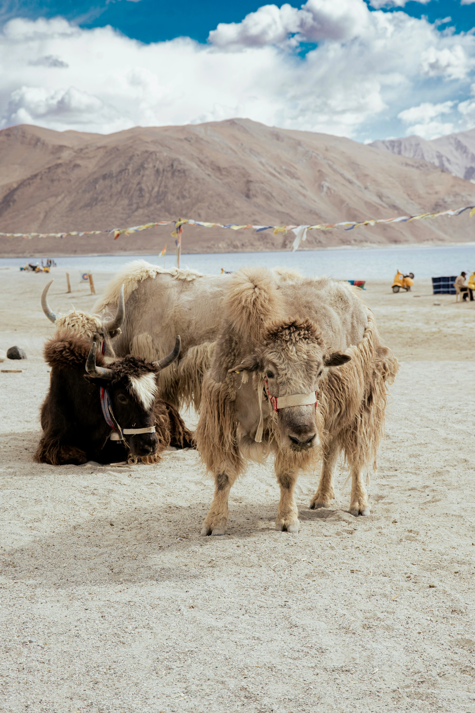
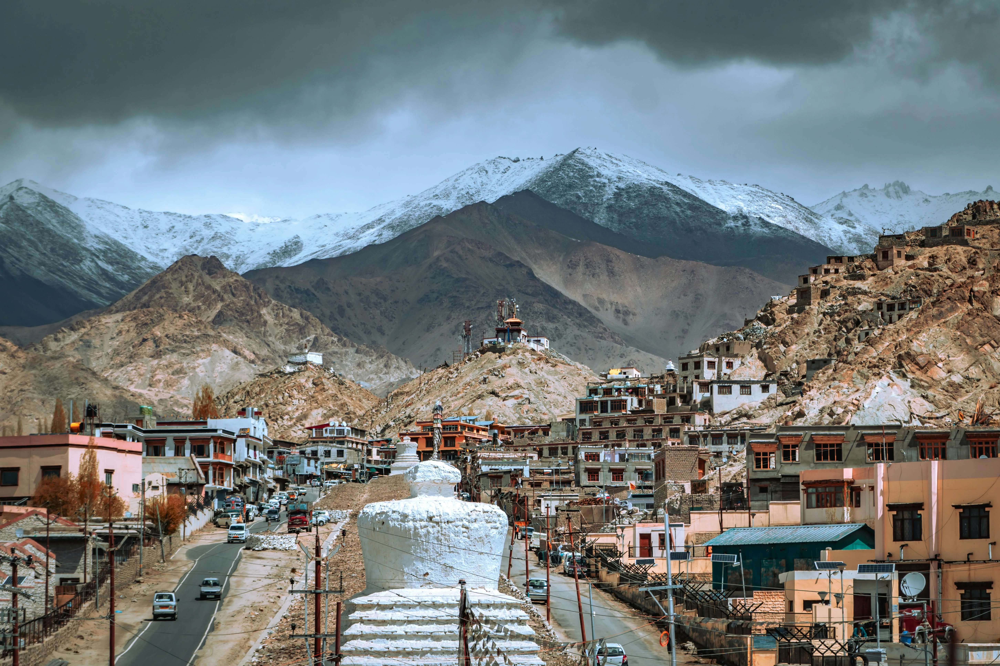
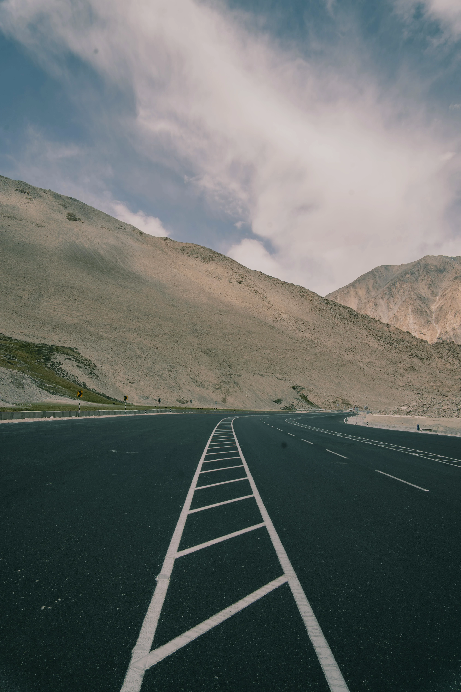
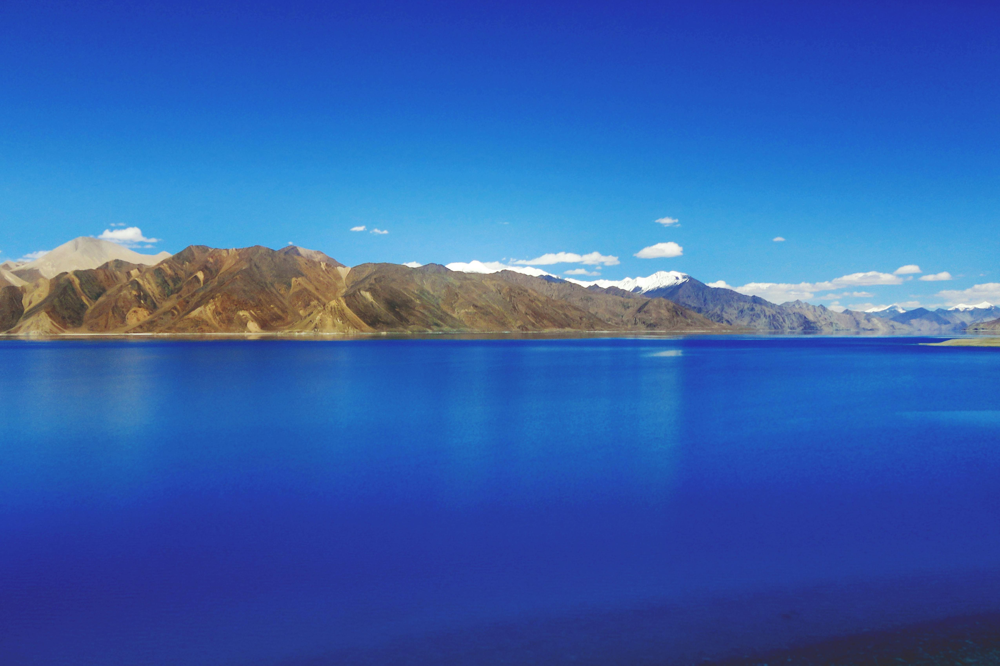
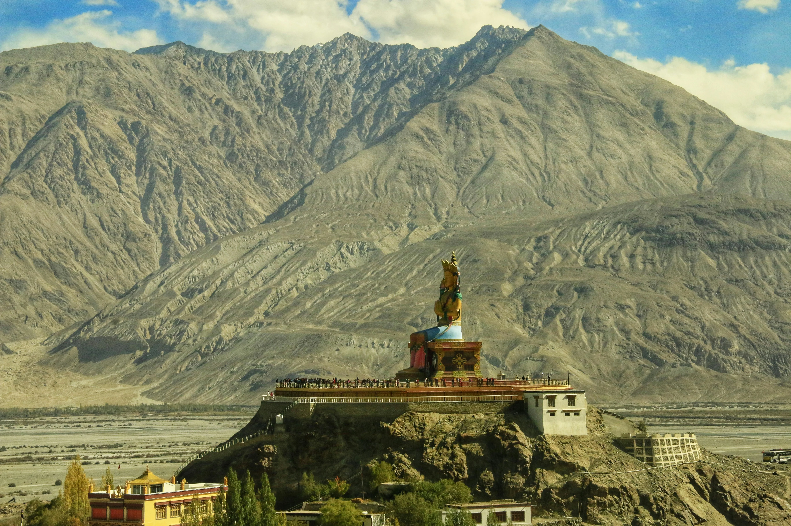

Also Explore
Other Destinations Near Ladakh
Pair your Ladakh trip with these stunning Kashmir destinations.


The Enchanting Land of Mystical Landscapes — where the world's coldest desert meets Himalayan peaks and ancient Buddhist culture.
Ladakh, a breathtaking union territory in northern India, was officially designated as a separate region on October 31, 2019. Stretching from the Siachen Glacier to the Great Himalayas, it is home to dramatic landscapes and is renowned as the world's coldest desert.
Adorned with stunning Tibetan Buddhist monasteries (Gompas), fluttering prayer flags, and whitewashed stupas, Ladakh is a vibrant fusion of intricate murals and red-robed monks. It is a land of stark contrasts, where one can experience both sunstroke and frostbite simultaneously while sitting in the sun with feet in the shade.
The warm and welcoming locals add to the region's charm, embracing a culture deeply rooted in Tibetan traditions. For adventure seekers, Ladakh is a paradise, offering thrilling rafting experiences and high-altitude trekking.
Often confused as a single entity, Ladakh is actually divided into two districts — Leh and Kargil. Leh, a major tourist hub, is known for its captivating monasteries, the serene Shanti Stupa, vibrant cafés, and the bustling Leh Bazaar, offering a glimpse into Ladakh's rich culture and heritage.
Raw, rugged, and impossibly beautiful — every frame in Ladakh tells a story.





From ancient monasteries to frozen rivers, Ladakh is unlike anywhere else on Earth.
Discover ancient Gompas perched on cliffsides, adorned with intricate murals, thangkas, and red-robed monks chanting in centuries-old traditions.
The iconic high-altitude lake straddling India and China, known for its surreal blue waters that change colour through the day.
From the legendary Chadar Trek on the frozen Zanskar River in winter to high-altitude passes like Khardung La in summer.
Experience Ladakhi festivals, Losar celebrations, and the warm hospitality of locals deeply rooted in Tibetan Buddhist traditions.
Reach the "Valley of Flowers" via the world's highest motorable road. Ride double-humped Bactrian camels on the Hunder sand dunes.
A land of stark contrasts — barren moonscapes, sapphire lakes, snow-capped peaks, and golden sand dunes all within a single day's drive.
Ladakh's extreme altitude means each season offers a completely different experience. Choose your window carefully.
Clear skies, open roads, and ideal temperatures (10°C–25°C). All tourist attractions, monasteries and trekking routes fully accessible.
Cooler temperatures and thinner crowds. Beautiful autumn foliage. Roads close by late October — fly in for the experience.
Extreme cold (−20°C to −30°C) but magical. The famous Chadar Trek on the frozen Zanskar River runs through this period.
Pair your Ladakh trip with these stunning Kashmir destinations.
Let us plan your perfect Ladakh trip — customized itinerary, comfortable stays, and hassle-free travel from Srinagar.